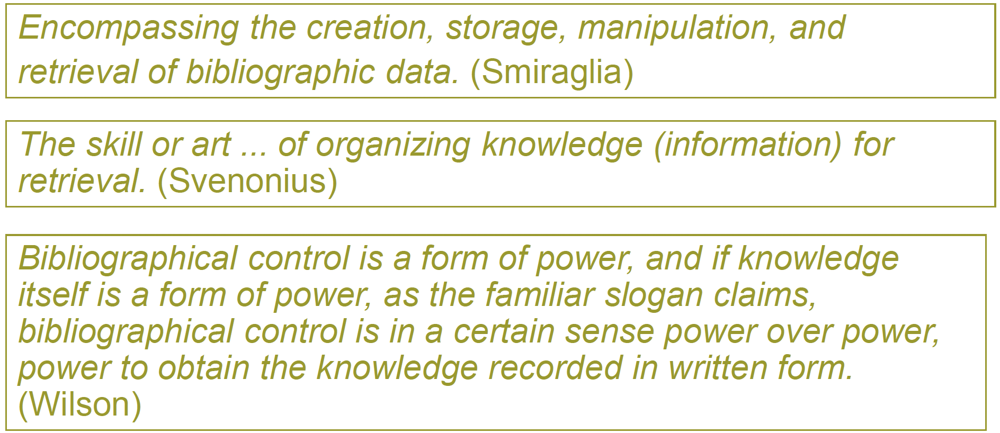
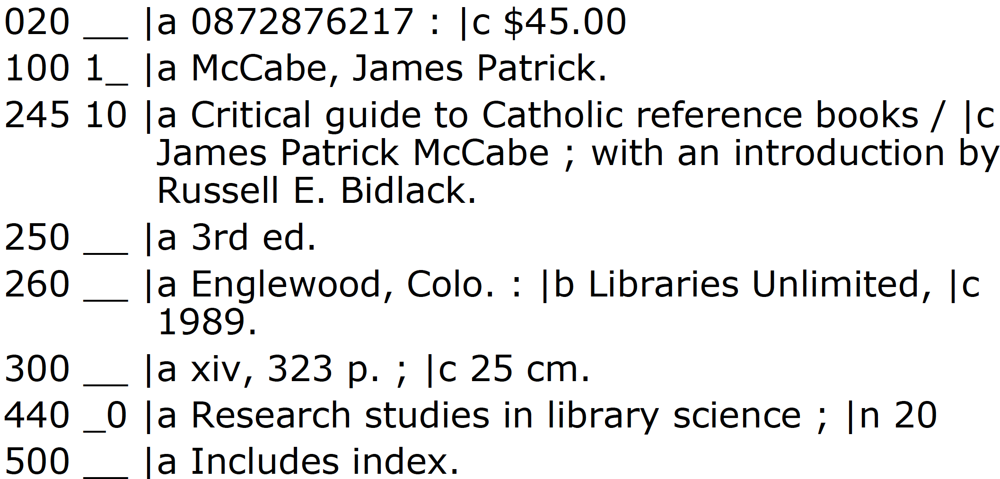

LIS 5043: Organization of Information
We attempt to exert this control over the bibliographic universe
Aggregate of data that are associated with entities described in library catalogs and national bibliographies
A record which accurately describes an item (book, map, computer file, etc.) both physically and intellectually in such a manner as to distinguish it from all other items in the bibliographic file
What should be included in bibliographic records?
Why is certain information contained in bibliographic records?
Descriptive Cataloging
Subject Analysis/Cataloging
Classification
The functions of descriptive cataloging are
To describe the significant features of the book which will serve (a) to distinguish it from other books and other editions of this book, and (b) characterize its contents, scope, and bibliographical relations
To present the data in an entry which will (a) fit well with the entries of other books and other editions of this book in the catalog, and (b) respond best to the interests of the majority of users
Areas of Bibliographic Description include
First Level
Gypsy ballads/Federico Garcia Lorca -- Warminster: Aris & Phillips. c1990. -- vii, 161p. -- ISBN 0-85668-490-2.Second Level
Gypsy ballads = Romancero gitano translated and with an introduction and commentary/Federico Garcia Lorca; translated by R. Harvard; illustrated by M. Gollanz. -- Warminster: Aris & Phillips. c1990. -- vii, 161p: ill; 22cm. ----. ISBN 0 85668 490 2.Third Level
Gypsy ballads = Romancero gitano translated and with an introduction and commentary/Federico Garcia Lorca; translated by R. Harvard; illustrated by M. Gollanz. -- Warminster: Aris & Phillips. c1990. -- vii, 161p: ill; 22cm. ---- (Hispanic classics). -- ISBN 0 85668 490 2.(Card info from Taylor 2000, 15)
The descriptive cataloging information (plus main entry) from the previous record in MARC:
AACR2 is the standard sets of rules used for descriptive cataloging until 2013 and later
Identify elements that should be included in a descriptive record
Provide a sense of the semantics of those elements
Give the content rules for entering the data into the MARC record structure
Also, provide guidance in determining access points for names, titles
Does NOT tell us how to enter subject related data for our records
Part I: Description
Introduction
AACR2 and the ISBD were written to accommodate cards. However, some aspects of these rules were changed when the record is moved from card form to MARC record form.
For example, from AACR2 1.0C1: “Precede each area, other than the first area, or each occurrence of a note or standard number, etc., by a full stop, space, dash, space (. –) unless the area begins a new paragraph.”
RDA is based on the conceptual metadata models, the FRBR (Functional Requirements for Bibliographic Records) and FRAD (Functional Requirements for Authority Data), developed by IFLA and the international cataloging community
It is also aligned with the principles of the International Cataloging Principles (ICP)
Efforts have been underway since 2003 to completely revise the AACR2. The Resource Description and Access or RDA began testing in 2010
In 2011 a decision was made by US national libraries to implement RDA
Individual libraries will have to determine if and when they will also implement but many academic and larger public libraries are already implementing RDA
International libraries are already beginning to implement
A new standard for resource description and access
Designed for the digital world
AACR2
Description of information entities – 13 chapters (Part 1)
Weak on access points; talks of main and added access points, have to look all over Part II for access point provisions (e.g., title access points are discussed in chapter 21 only and then only as a default provision, not much direction)
Is not really based on the idea of a “work”, rather it is very much based on the unit record system
RDA
RDA now outlines the first step in creating a catalog record as deciding on the type of description to be represented, and not deciding on format, although format is still integral
Types of description (rules 1.2)
More emphasis on showing bibliographic relationships (e.g., taxonomy of bibliographic relationships) in order to better allow clustering of records
General Material Designations
The MARBI working group (comprised of members from the Library of Congress, British Library, Library and Archives Canada, and other entities) has been working to revise the MARC structure to work with RDA
MARBI disbanded in 2012/13 joint LITA/ALCTS group on metadata and new bib framework forming
Documentation (www.loc.gov/marc)